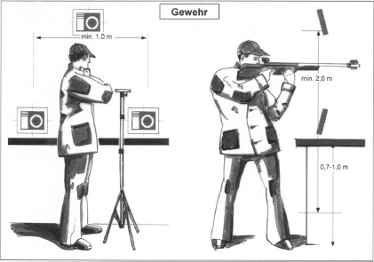
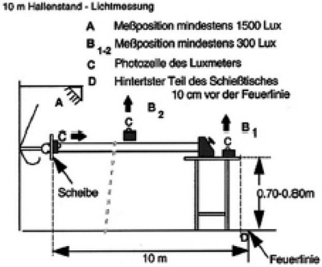
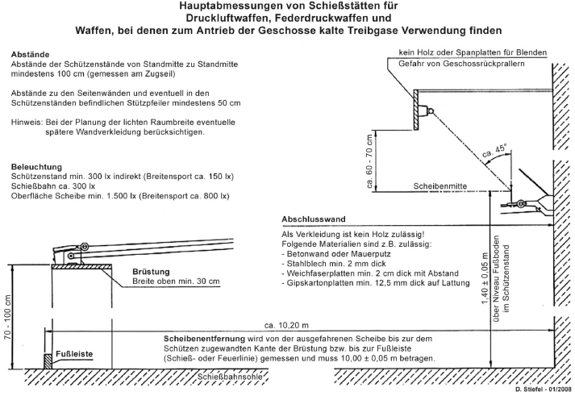
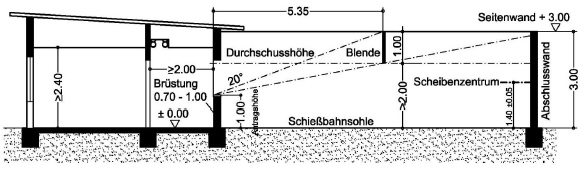

Auf diesen Schießständen wird mit DL-Waffen üblicherweise auf eine Distanz von 10 m auf Scheiben geschossen. Diese Schießstände stellen anteilig die am häufigsten im Schießsport genutzte Anlagenart dar.
Sicherheitstechnische Vorgaben für spezielle Schießstände, z. B. für Sommerbiathlon mit DL-Waffen werden in Nummer 6.1, für Field-Target-Schießen in Nummer 6.4, für ortsveränderliche Schießstätten zur Belustigung in Nummer 6.5 und für Vogelschießstände in Nummer 7 beschrieben.
Schießstätten zum Schießen mit DL-Waffen benötigen lediglich eine waffenrechtliche Betriebserlaubnis nach § 27 Absatz 1 WaffG. Sie unterliegen aufgrund der Waffenart (keine Feuerwaffen) nicht dem immissionsschutzrechtlichen Genehmigungsverfahren gemäß Nummer 10.18 des Anhanges der Verordnung über genehmigungsbedürftige Anlagen (siehe 4. BImSchV).
3.1 Geschlossene Schießstände für DL-Waffen
3.1.1 Schützenstand
Die notwendigen Abmessungen und zulässigen Toleranzen sind in der Tabelle 3.1.1 zusammengefasst und in der Zeichnung 3.1.9 dargestellt.
In sog. Altanlagen (das heißt Schießstände, die vor 1995 in Betrieb genommen worden sind), die vornehmlich dem Breitensport dienen, sind geringere Breiten der Schützenpositionen bis maximal 10 % von den in der Tabelle 3.1.1 genannten Mindestbreiten der Schützpositionen zulässig.
Wird ausschließlich im stehenden Anschlag geschossen, so kann bei Altanlagen in begründeten Ausnahmefällen unter Beteiligung eines SSV eine weitere Verringerung der seitlichen Abstände zwischen den Schützenpositionen zugelassen werden, wenn zusätzliche sicherheitstechnische Einrichtungen, wie Zwischenblenden, vorhanden sind bzw. eingebaut werden.
Der Fußboden des Schützenstandes muss waagerecht, eben und stabil sein. Schwingungen oder Erschütterungen aus dem an die Schützenposition angrenzenden Bodenbereichen sollen aus schießsportlichen Gründen nicht auf die Standflächen der Schützen übertragen werden.
Sofern eine Brüstung vorgesehen wird, soll diese durchgehend 70 cm bis max. 100 cm hoch und oben ≥ 30 cm breit sein. Die Anordnung einer Öffnung mit aufklappbarer Abdeckung zum Betreten der Schießbahn ist sinnvoll.
Statt einer durchgehenden Brüstung können auch einzelne mobile Ablagetische vor den Schützen vorgesehen werden.
Für das Schießen im sitzenden und stehenden Anschlag darf an oder in der Brüstung jeweils eine Konstruktion zum Auflegen der Langwaffe vorgesehen werden. Die Auflage besteht aus in der Mitte der Schützenposition, z. B. ca. 35 cm von der Feuerlinie, in der Schießbahn waagerecht angeordnetem Rund- bzw. Halbrundmaterial (Holz oder Metall) mit einem oberen Durchmesser von ≤ 50 mm und einer Länge von ≥ 100 mm. Die Oberfläche der Auflage soll glatt und nicht rutschhemmend sein.
Die Unterkonstruktion, an der die Auflage in der Höhe mit einfachen Mitteln veränderlich befestigt werden kann, ist möglichst so an der Brüstung oder am Ablagetisch zu montieren, dass keine Behinderung für das Schießen ohne Auflage eintreten kann.
Die Auflage sollte so konstruiert und befestigt werden, dass Erschütterungen nicht weitergeleitet werden können.
Werden elektronische Trefferanzeigesysteme eingesetzt, ist die Platzierung der notwendigen Schützenmonitore mit dem SSV abzustimmen. Die Monitore sind grundsätzlich so zu positionieren, dass sich die Bildschirmoberflächen der Monitore hinter den Waffenmündungen in Richtung der Schützen befinden.
| Maßvorgabe | Toleranz | |
| Scheibenentfernung | 10,00 m | ± 0,05 m |
| Breite der Schützenpositionen | 1,00 m | Mindestmaß |
| Schützenstandtiefe stehender Anschlag17 | 2,00 m | Mindestmaß |
| Schützenstandtiefe liegender Anschlag18 | 4,00 m | Mindestmaß |
| Scheibenhöhe | 1,40 m | ± 0,05 m |
| seitliche Abweichung der Scheibenmitte19 | ± 0,25 m |
Tabelle 3.1.1 Abmessungen auf DL-Ständen

Abbildung 3.1.1 Abmessungen am Schützenstand für DL-Waffen
3.1.2 Schießbahn
3.1.2.1 Allgemeines
Die Umfassungsbauteile der Schießbahn müssen in Schussrichtung gesehen durchschuss- und rückprallsicher ausgeführt werden (siehe Nummer 2.8.2 und 2.8.3). Die Durchschusssicherheit wird im Regelfall bereits durch statische Anforderungen gewährleistet.
Die Schützenpositionen und die Geschossfänge sind gemäß schießsportlichen Vorgaben fortlaufend zu nummerieren.
Sofern innerhalb der Schießbahn Werbeträger aufgestellt werden, so müssen die hierzu verwendeten Materialien so beschaffen sein, dass keine gefährlichen Geschossrückpraller entstehen können.
3.1.2.2 Seitenwände
Seitenwände sind so zu gestalten, dass bei zufälligen Treffern (z. B. durch unbeabsichtigte Schussauslösungen) keine gefährlichen Geschossrückpraller erzeugt werden.
Werden Schützenstände und Schießbahnen in großen Räumen (z. B. in Sälen, Turnhallen o. Ä.) von übrigen weiter begeh- oder nutzbaren Flächen abgetrennt, so ist hierzu eine geschlossene Trennwand mit einer Gesamthöhe von ≥ 2,00 m aufzustellen. Diese Trennwand muss bündig auf dem Fußboden des Raumes stehen und ist aus dem gleichen Material wie für Fensterverblendungen nach Nummer 3.1.2.3 herzustellen.
Schützenscheiben aus Holz dürfen an den Seitenwänden nur dann aufgehängt werden, wenn sich deren Unterkanten in einer Höhe mehr als 2,00 m über dem Niveau des Fußbodens in den Schützenständen befinden oder die sicherheitsrelevanten Flächen rückprallsicher bekleidet sind.
3.1.2.3 Fenster
Befinden sich in der Schießbahn Fenster, die aus einfachem Fensterglas bestehen und somit nicht durchschusssicher sind, müssen diese gegen direkten Beschuss abgeschirmt werden.
Für seitliche Bekleidungen, die nicht senkrecht zu den zulässigen Schussrichtungen stehen, sind folgende Baustoffe oder gleichwertige Materialien einzusetzen:
Durch die Abdeckungen der Fenster wird ein beim Schießen störender seitlicher Lichteinfall vermieden. Sicherheitstechnisch nicht erforderlich ist die Abdeckung bei Isolierverglasungen, Verbundglasfenstern oder z. B. bei Einfachfenstern mit außen vorgesetzten Kellerlichtschächten.
Fenster in der Abschlusswand müssen sowohl durchschuss- als auch rückprallsicher schießbahnseitig bekleidet werden.
3.1.2.4 Decke
Eine Raumhöhe über 2,40 m ist anzustreben. Die Raumdecke ist ebenfalls rückprallsicher auszuführen.
Für Deckenbekleidungen können z. B. verwendet werden:
3.1.2.5 Schießbahnsohle
An die Schießbahnsohle werden keine besonderen Anforderungen gestellt. Sie muss jedoch rückprallsicher sein. Diese kann aus glattem Beton, Asphalt, Fliesen, Bodenbelag, Teppichboden o. Ä. bestehen. Eine einfache Reinigung sollte im Vordergrund stehen. Schallabsorbierender textiler Bodenbelag reduziert mögliche Nachhallzeiten im Raum.
3.1.2.6 Stützsäulen in der Schießbahn
In der Schießbahn befindliche Stützen aus Beton, Mauerwerk oder Stahl benötigen in der Regel keine speziellen Bekleidung. Bei einem Abstand < 2,00 m zwischen Säule und Brüstung bzw. Feuerlinie ist eine Geschoss aufnehmende schützenseitige Bekleidung der Stützen (Materialien siehe Nummer 3.1.3) notwendig.
Senkrecht zur Schussrichtung in der Schießbahn angeordnete Flächen von Holzstützen, Deckenbalken oder Fachwerkstreben sind schützenseitig in einer Höhe bis ≤ 3,00 m über Fußboden zu bekleiden (Materialien siehe Nummer 3.1.3).
3.1.2.7 Scheibenentfernung, Raumlänge
Gemäß den genehmigten Sportordnungen der nach § 15 WaffG anerkannten Schießsportverbände beträgt die Schießentfernung 10,00 m ± 0,05 m. Diese wird vom Scheibenspiegel bis zur Entfernungsmarkierung am Schützenstand (Schieß-/Feuerlinie) bzw. bis zu der dem Schützen zugewandten Kante der Brüstung oder bei schräger Brüstungsfront an der Fußleiste gemessen.
Die lichte Gesamtlänge des Schießstandes bei einer Schießentfernung von 10,00 m beträgt für den stehenden (bzw. auch sitzend aufgelegten) Anschlag somit ≥ 12,20 m (Schießentfernung 10,00 m + Schützenstandtiefe ≥ 2,00 m + Bautiefe Geschossfangsystem ≥ 0,20 m). Bei der Berücksichtigung der jeweiligen Bautiefe ist die Art der Geschossfänge ausschlaggebend und sollte bei Neuplanungen und Umrüstungen bestehender Schießstände vorher abgeklärt werden.
Wird im Liegendanschlag geschossen, so beträgt die erforderliche Raumlänge ≥ 14,20 m.
Werden bei bestehenden Schießständen diese Abmessungen, u. a. auch durch Umrüstung der Geschossfänge, unterschritten, ist im Einzelfall zu prüfen, ob durch die Unterschreitung der Sollmaße unter Berücksichtigung der zulässigen Toleranzen eine Gefährdung oder Belästigung der Schützen eintreten kann. Ist dies auszuschließen, darf von den schießsportlichen Maßvorgaben abgewichen werden.
3.1.3 Abschlusswand
Die Abschlusswand, auf der die Geschossfänge montiert werden, ist in einer Höhe bis ≥ 3,00 m so zu gestalten, dass keine gefährlichen Geschossrückpraller auftreten. Holz (auch Weichholz) und Holzwerkstoffe (Span-, OSB-, MDF-Platten o. Ä.) sind an der Oberfläche nicht zulässig.
Als rückprallsicher gelten nach derzeitigem Stand der Technik folgende Materialien:
Die Plattenbaustoffe müssen jeweils auf nicht federnden Unterkonstruktionen angebracht werden.
3.1.4 Elektrotechnische (ELT) Anlage
3.1.4.1 Beleuchtung
Die Leuchtstärke in einer RSA für DL-Waffen muss im Schützenstand und in der Schießbahn z. B. gemäß Sportordnung des DSB mindestens 300 lx (indirekt) betragen. Die Scheiben sind gleichmäßig mit mindestens 1 000 lx zu beleuchten.
Für die Prüfung der unter Nummer 2.5.2 aufgeführten Beleuchtungswerte für die Durchführung von internationalen Wettkämpfen nach ISSF-Regeln ist nach Abbildung 3.1.4.1 zu verfahren.

Abbildung 3.1.4.1 Beleuchtung auf DL-Ständen
Für einen ausschließlich im Breitensport betriebenen Schießstand darf die Beleuchtungsstärke in der Schießbahn und im Schützenstand auf ≥ 150 lx (indirekte, blendfreie und weitgehend gleichmäßige Ausleuchtung) reduziert werden. Sicherheitstechnisch erforderlich ist nur eine Raumausleuchtung, die eine ungehinderte Beaufsichtigung des Schießbetriebs zulässt.
Alle Beleuchtungskörper in der Schießbahn oder im begehbaren Teil des abgetrennten Raumes neben dem Schießstand sind, soweit sie von direkten Schüssen getroffen werden können, mit einer transparenten, nicht splitternden Abdeckung oder Blenden (durchschuss- und rückprallsicher) abzuschirmen. Beleuchtungseinrichtungen direkt über den Schützenpositionen sind zu vermeiden oder abzuschirmen.
Die Abdeckungen der Scheibenbeleuchtungen, die direkt an den Geschossfängen montiert sind, sind durchschuss- und rückprallsicher auszuführen. Wird die Scheibenbeleuchtung hinter einer durchgehenden Blende montiert, so muss auch diese Blende durchschusssicher und schützenseitig rückprallsicher gestaltet werden. Blenden aus Holzwerkstoffen sind schützenseitig rückprallsicher nachzurüsten (Materialien siehe Nummer 3.1.3).
3.1.4.2 Strom führende Leitungen
Alle in der Schießbahn befindlichen und durch direkten Beschuss gefährdeten Strom führenden Leitungen, Dosen und Schalter sind wie die Beleuchtungseinrichtungen gegen direkten Beschuss abzuschirmen.
Insbesondere elektrische Leitungen, die zu Scheibenbeleuchtungen direkt bei den Geschossfängen führen, müssen entsprechend verlegt, in Kabelschutzrohr aus Stahl geführt oder durch Stahlblech d ≥ 2,0 mm abgeschirmt werden.
Bei Mess- und Steuerleitungen für elektronische Scheibensysteme sowie bei Lampen, die mit einer Kleinspannung (Wechselspannung bis 50 Volt) betrieben werden, ist eine Beschusssicherung nicht erforderlich.
3.1.4.3 Sicherheits- und Notbeleuchtung
Neben der Allgemeinbeleuchtung ist zusätzlich eine netzunabhängige Ersatzbeleuchtung im Bereich der Schützenstände nach DIN EN 1838 bereitzuhalten.
Die Ersatzbeleuchtung soll bei Ausfall der normalen Beleuchtung den Aufsichtspersonen ermöglichen, die Schützen weiterhin zu beaufsichtigen. Bei bestehenden Schießständen mit bis zu 12 Schützenpositionen kann auch eine funktionierende Taschenlampe genügen.
3.1.5 Geschossfänge
Bei Geschossfängen müssen deren Abweisplatten (Stahlblech d ≥ 2,0 mm oder gleichwertiger Kunststoff) in ihren Abmessungen auf die verwendeten Scheiben abgestimmt sein (siehe Nummer 2.8.5.1.1).
Die Geschossfänge sollen so schwingungsgedämpft befestigt werden, dass eine Übertragung der Aufprallgeräusche der Projektile in das Material der Abschlusswand (Mauerwerk, Beton etc.) vermieden wird.
Sofern bei elektronischen Messrahmen der ballistische Schutz durch Kunststoffplatten hergestellt wird, ist deren Geeignetheit, insbesondere der Rück- und Abprallschutz, nachzuweisen.
3.1.6 Türen, Flucht- und Rettungsweg
Ein Schießstand muss zum Zu- und Ausgang einen zusätzlichen Flucht- und Rettungsweg (Notausgang) haben. Der Rettungsweg muss auf möglichst kurzem Weg ins Freie oder in einen gesicherten Bereich führen. Fehlt dieser zweite Rettungsweg in Altanlagen, so muss die Ausgangstür in Fluchtrichtung öffnen.
In Neuanlagen ist der zweite Flucht- und Rettungsweg vorzugsweise im Schützenstand vorzusehen.
Der Notausgang ist nach DIN 4844 zu kennzeichnen. Dies kann mit einem ≥ 60 Minuten lang nachleuchtendem Piktogramm oder einer Sicherheitsbeleuchtung gemäß VDE 0108 bzw. DIN VDE 0100-718 erfolgen.
3.1.7 Zeichnung

3.2 Offene Schießstände für DL-Waffen
3.2.1 Schützenstand
Die grundlegenden Anforderungen an den Schützenstand entsprechen Nummer 3.1.1.
3.2.2 Seiten- und Höhensicherung
In Schussrichtung gesehen sind bei einem offenen Schießstand für DL-Waffen folgende Bereiche ab der Schießlinie bzw. Brüstung von der Waagerechten bzw. der Senkrechten in Schussrichtung gefährdet:
Die gefährdeten Bereiche müssen durch entsprechende Sicherheitseinrichtungen, die auf die maximale Geschossenergie von 7,5 J abgestimmt sind, durchschusssicher abgeschirmt werden. Die Abschirmung erfolgt durch einfache Sicherheitsbauten (Hochblenden, Seitenwände und Abschlusswand).
Sofern als Material für Hochblenden und Abschlusswand Holzbaustoffe eingebaut werden sollen, müssen diese schützenseitig rückprallsicher bekleidet werden (Nummer 3.1.3).
Die ausreichende Abstimmung der Sicherheitsbauten ist gegeben, wenn von der Antragshöhenordinate (Höhe der Brüstung) an der Gefährdungswinkel mit durchschusssicheren Baustoffen abgedeckt ist. Aus diesen Überlegungen ergibt sich im Regelfall nach Abbildung 3.2.2 folgende Anordnung mit einer Hochblende und der Abschlusswand:

Abbildung 3.2.2 Längsschnitt eines offenen DL-Schießstandes (Prinzip)
Soll von den Maßen der Zeichnung in Abbildung 3.2.2 abgewichen werden, ist die Berechnung der Maße für die Positionierung und Höhen der Hochblende und Abschlusswand nach Nummer 4.7 durchzuführen.
Ein Abschirmen der Schießbahn bei Schießständen für DL-Waffen durch Höhen- und Seitenabsicherung kann entfallen, wenn das Gelände in Schussrichtung bis zu einer Entfernung von 250 m mit beidseitigen Winkeln von 25° seitlich der Schussrichtung der jeweils äußeren Schützenpositionen gegen ein Betreten abgesperrt wird.
Unbeschadet obiger Bestimmungen ist die Schießbahn für DL-Waffen nach außen immer durch eine Abschlusswand der Höhe ≥ 2,00 m abzuschließen, damit die Projektile innerhalb der Schießbahn aufgefangen werden. Seitlich sind bis 1,00 m hinter die Schießlinie reichende Seitenwände anzubringen.
3.2.3 Schießbahn
Die Schießbahnsohle soll möglichst eben sein. Unter den Geschossfängen ist die Schießbahnsohle, sofern sie unbefestigt ist, mit einer Folie der Breite ≥ 1,00 m oder dergleichen abzudecken, damit kein Eintrag von Blei in den Boden erfolgen kann.
Hinsichtlich der Geschossfänge siehe Nummer 3.1.6. Über den Geschossfängen ist ein ausreichend großes Fangdach so anzubringen, dass ein Auswaschen von Geschossmaterial aus den Auffangbehältern verhindert wird.
3.2.4 Abschlusswand
Die gesamte schützenseitige Fläche der Abschlusswand, auf der die Geschossfänge montiert werden, ist so zu gestalten, dass keine gefährlichen Geschossrückpraller auftreten. Die zulässigen Materialien und sonstige Anforderungen ergeben sich aus Nummer 3.1.3.
3.3 Nutzung mit Zimmerstutzen und Armbrust
Sofern auf DL-Ständen auch mit Zimmerstutzen und/oder Armbrust geschossen wird, gelten die gleichen Bestimmungen (Nummer 3.1 und 3.2) mit den folgenden Abweichungen.
3.3.1 Nutzung mit Zimmerstutzen
3.3.1.1 Schießbahnlänge
Bei Zimmerstutzen ist nach den schießsportlichen Regeln des DSB eine Scheibenentfernung von 15 m ± 0,05 m vorgesehen. Eine Nutzung im Breitensport auf einer Entfernung von 10 m ist zulässig.
3.3.1.2 Sicherheitsbauten
Notwendige Sicherheitsbauten (Seiten- und Höhensicherung) sowie Verblendungen von Fenstern und Türen sind aus einem der folgenden Baustoffe herzustellen:
Die Sicherheitsbauten und Verblendungen von Fenstern und Türen sind, sofern Rückprallgefahr beim Schießen mit DL-Waffen besteht, gemäß Nummer 3.1.1 mit Geschoss aufnehmenden Materialien rückprallsicher zu bekleiden.
3.3.1.3 Geschossfänge
Zum Auffangen der Geschosse sind Geschossfangkästen aus Stahlblech zu verwenden, die auf die höhere Bewegungsenergie der Geschosse abgestimmt sind.
3.3.2 Nutzung mit Armbrust
3.3.2.1 Scheibenunterlage
Beim Schießen mit der Armbrust sind geeignete Zuganlagen zu verwenden. Zur Aufnahme von Scheiben sind diese Zuganlagen mit einer Scheibenunterlage aus Holz und mit einem Zentrum aus Weichblei ausgestattet. Die Bleiplatten weisen Abmessungen von 5 cm x 5 cm Kantenlänge oder einen Durchmesser von 5 cm für die 10-m-Disziplin auf. Die Dicke der Bleifüllung beträgt d ≥ 2 cm.
3.3.2.2 Bekleidung harter Baustoffe
In Schussrichtung senkrecht stehende harte Baustoffe können zu einer Beschädigung der Bolzen führen. Aus diesem Grund wird eine Abdeckung mit weichen, die Bolzen aufnehmenden Materialien empfohlen (z. B. Weichfaserplatten).
Besteht an den harten Baustoffen beim Schießen mit DL-Waffen die Gefahr, dass Geschosse gefährlich zurückprallen können, ist der Bereich gemäß Nummer 3.1.1 rückprallsicher zu bekleiden.
| 17 | auch sitzender Anschlag |
| 18 | auch kniender Anschlag |
| 19 | von der senkrecht auf der Schießlinie stehenden Mittelachse der jeweiligen Schießbahn |